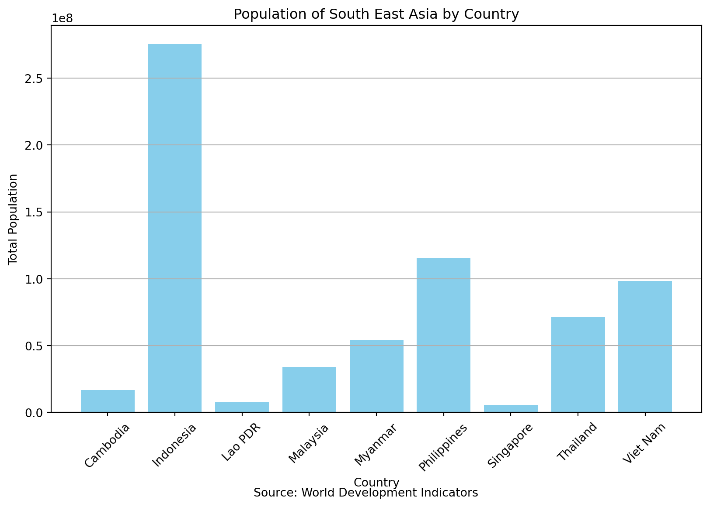
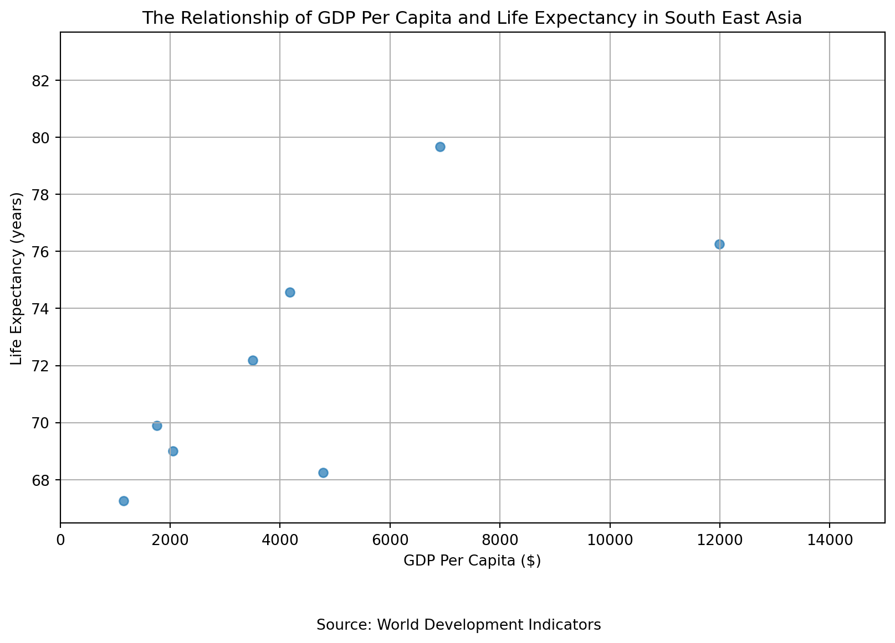
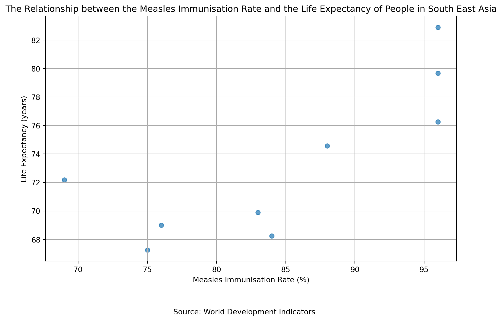

678996100.0QTM 350 Assignment #5
Analysing South East Asia Through the Lens of the World Development Index
What Countries are in South East Asia?
South East Asia is usually defined as the countries of Singapore, Malaysia, Indoneisa, Vietnam, Laos, Thailand, Myanmar, Cambodia, Brunei and the Phillipines though some argue over this definition and general definitions of what makes up Asia’s regions (ACHARYA 2010). While we wil use this definition for this report, Brunei will not be included as the WDI Dataset does not have any data for that country.
How Many People Live in South East Asia?
Based on WDI data which does not include Brunei, there are 678,996,100 total people living in South East Asia. Similiar to concerns in Western nations governments have recently become concerned with the sharp fall in total fertility rate (Runde, Bandura, and Murphy 2018).
| Country | Population | |
|---|---|---|
| 0 | Malaysia | 33938221 |
| 1 | Cambodia | 16767842 |
| 2 | Indonesia | 275501339 |
| 3 | Myanmar | 54179306 |
| 4 | Singapore | 5637022 |
| 5 | Thailand | 71697030 |
| 6 | Laos | 7529475 |
| 7 | Philippines | 115559009 |
| 8 | Vietnam | 98186856 |
| 9 | Total | 678996100 |
Exact numbers for every South East Asian Country’s can be found in this Table @ref(population-table).

What is the relationship between GDP Per Capita and Life Expectancy in South East Asian Countries?
Generally, life expectancy is higher for people in South East Asia in countries with higher GDP Per capita. When analysing GDP Per Capita it should be noted that the GDP Per Capita of Singapore, which is not shown on the below graph, is $88,428 and therefore seven times the GDP per capita of the next richest nation of Malaysia. Unsuprisingly, Singapore also had the highest life expectancy of all South East Asian Countries.

What is the the relationship between Measles Immunisation Rate and Life Expectancy in South East Asian Countries?
The relationship between measles immunisation rate varied across South East Asian countries. While it was generally seen that countries with higher percentage of their population immunised for Measles had higher life expectancies, there was a few key outliers. In fact, the Philippines, which had the lowest immunisation rate, ranked 5th of of the nine South East Asian countries on life expectancy.

References
ACHARYA, AMITAV. 2010. “Asia Is Not One.” The Journal of Asian Studies 69 (4): 1001–13. http://www.jstor.org/stable/40929278.
Runde, Daniel F., Romina Bandura, and Owen Murphy. 2018. “Renewing u.s. Economic Engagement with the Developing World.” Center for Strategic; International Studies (CSIS). http://www.jstor.org/stable/resrep22603.5.